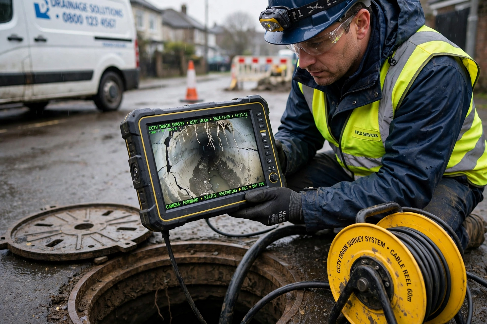

Blocked Drain Rescue NW clears blocked drains, toilets, sinks and outside drains for homes and businesses. We find the cause, clear it properly, and test it before we leave — with a clear quote before any work starts.

Local team • Rapid response • No hidden call-out fees
Blocked drains are stressful, messy, and they never happen at a convenient time. Our job is to make it simple: one call, one clear price, one team who turns up, finds the problem, and fixes it.
We work across routine unblocks, stubborn repeat blockages, CCTV inspections and preventative maintenance — for houses, landlords, shops, offices, pubs, restaurants and sites across the North West.
🤝 Partnered with SB Drainage
Blocked Drain Rescue NW works in partnership with SB Drainage — extra capacity, shared know-how, and the same straightforward standard on every job.

A CCTV survey shows exactly what’s going on underground — cracks, roots, collapsed sections or a displaced joint — so we don’t have to guess, or dig up what doesn’t need digging.
If it drains slowly, gurgles, smells, or has stopped completely — this is what we do.
Full blockages, overflowing manholes and toilets that won’t flush. Rodding + jetting to clear it properly, then a flow test.
Slow draining, standing water and bad smells from kitchen and bathroom waste pipes.
Powerful jetting blasts grease, scale, silt and debris — and leaves pipes clean, not just poked through.
Camera inspection to find the real cause of a repeat blockage, with footage and clear recommendations.
Cut out roots, repair damaged sections, and stop the same blockage coming back every few weeks.
Planned cleans and rapid response for businesses, landlords, letting agents and sites.
Based in Preston, covering the North West. If you’re not sure we cover you, call — if we can get to you, we will.
“Toilet blocked on a Sunday, sorted same day. Told me the price first, no mess left.”
— Sarah, Preston“Drain kept blocking every month. CCTV found roots, they cleared and fixed it. Hasn’t blocked since.”
— Dave, Leyland“Fast, polite, explained everything. Our cafe was back open the same afternoon.”
— Priya, ChorleyReplace these with your real reviews before going live.
Drainage can be confusing. Here are answers to the most common questions about our services.
We aim to attend blocked drains within 24 hours of your call. For emergencies and internal flooding we aim to get to you much faster — usually within a few hours, depending on where you are. You’ll get a clear price before work starts, and we’ll follow up after the job.
A small waterproof camera is sent down the pipe to look at the inside. We record what we see, pinpoint faults, and give you a report with images and recommendations. It’s non-invasive, avoids unnecessary digging, and saves time and money in the long run.
Yes — fully insured, with trained engineers, for domestic and commercial work. Ask us and we’ll confirm cover for your job.
It depends on the blockage, access and method needed. We’ll give you a fixed quote before work starts — no hidden fees, no surprises.
No — we use non-invasive methods first. Jetting and CCTV avoid digging in most cases, and we’ll tell you before we do anything that involves excavation.
Yes — Mon–Sun, 24/7 call-outs for emergencies.
Fill this in and we’ll call you back. For flooding, please call instead — it’s faster.
📞 Phone: [YOUR PHONE NUMBER]
✉️ Email: [YOUR EMAIL]
📍 Based in: Preston, covering the North West
🕒 Opening Hours: Mon–Sun, 24/7 Call-Outs
🤝 Partnered with SB Drainage
How the form works on Netlify: This uses Netlify Forms. After you deploy, go to Site settings → Forms → Form notifications → add your email. Every quote will then be emailed to you + saved in Netlify.